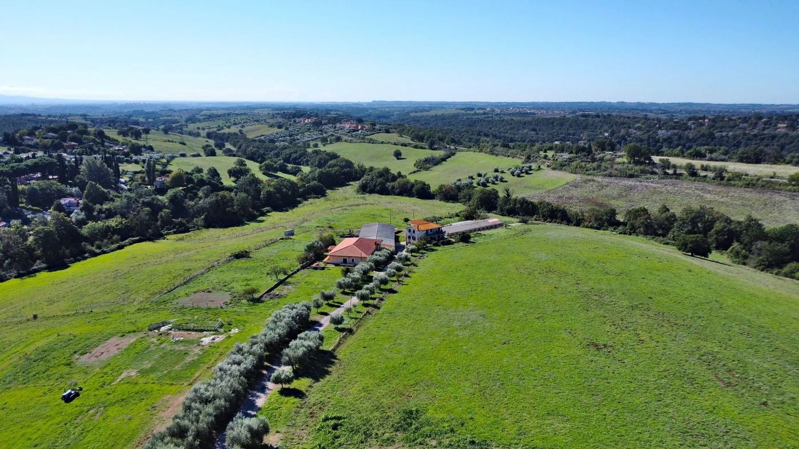
Riano · località Colle delle Rose · Roma
Ventuno ettari, un agriturismo con 8 camere, una società agricola autorizzata e oltre 1.600 mq di fabbricati, a 25 km da Roma.
Documento confidenziale
01 · L'opportunità in sintesi
Uno dei pochi compendi agricoli sopra i venti ettari ancora interi a questa distanza da Roma. Chi acquista trova terreni, abitazioni, una struttura ricettiva arredata e le autorizzazioni per lavorare da subito.
La stima di mercato redatta nel luglio 2025 da un'agenzia specializzata in terreni e aziende agricole valuta il compendio € 1.014.969. La richiesta è di € 869.000, il 14% in meno.
La stima applica ai valori agricoli medi della zona un incremento del 32% per posizione, dimensione, pendenze, presenza di accesso ed elettricità. Il valore definitivo va confermato con sopralluogo.
02 · Posizione
La tenuta si trova in località Colle delle Rose, nel Comune di Riano (RM), tra la Via Flaminia e Via Codette, poco a nord dell'Arco di Malborghetto. L'accesso carrabile è da Via Colle delle Rose.
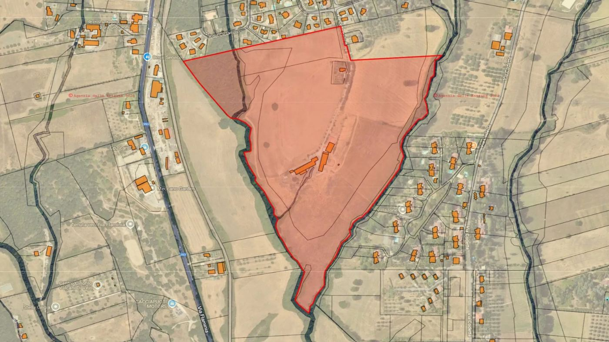
Perimetro su mappa catastale.
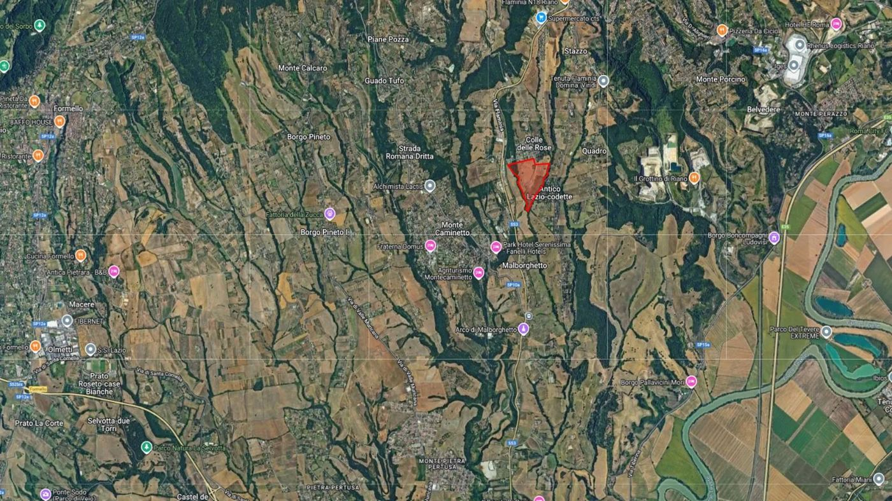
Inquadramento tra Flaminia e Tevere.
| Destinazione | Come | Distanza |
|---|---|---|
| Roma centro | Via Flaminia, 30–40 minuti in auto | ≈ 25 km |
| Grande Raccordo Anulare | uscita Flaminia | ≈ 15 km |
| Via Flaminia (SS3) | consolare che costeggia la proprietà | < 1 km |
| Lago di Bracciano | turismo naturalistico e del weekend | ≈ 25 km |
| Aeroporto di Fiumicino | voli internazionali | ≈ 50 km |
Nelle vicinanze: Parco Regionale di Veio, valle del Tevere, ferrovia Roma–Civita Castellana–Viterbo lungo la Flaminia, borghi di Riano, Sacrofano, Castelnuovo di Porto e Morlupo.
03 · I terreni
Fondo leggermente collinare, con prati aperti, seminativo, bosco ceduo lungo i fossi e un viale di ulivi che sale ai fabbricati.
| Comune | Foglio | Particella | Qualità | Classe | Mq |
|---|---|---|---|---|---|
| Riano | 5 | 14 | Bosco ceduo | 2 | 13.450 |
| Riano | 5 | 20 | Seminativo / Bosco ceduo | 3 / 3 | 63 + 279 |
| Riano | 5 | 21 | Seminativo / Bosco ceduo | 3 / 3 | 44 + 136 |
| Riano | 5 | 22 | Seminativo / Bosco ceduo | 3 / 3 | 190 + 500 |
| Riano | 5 | 285 | Seminativo | 3 | 1.875 |
| Riano | 5 | 286 | Seminativo | 3 | 690 |
| Riano | 5 | 287 | Seminativo | 2 | 12.465 |
| Riano | 5 | 288 | Seminativo | 2 | 6.760 |
| Riano | 5 | 290 | Seminativo | 3 | 12.550 |
| Riano | 5 | 617 | Seminativo | 3 | 121.917 |
| Riano | 5 | 619 | Seminativo | 2 | 33.092 |
| Riano | 5 | 621 | Seminativo | 3 | 4.919 |
| Totale · seminativo 194.565 mq · bosco ceduo 14.365 mq | 208.930 | ||||
04 · I fabbricati
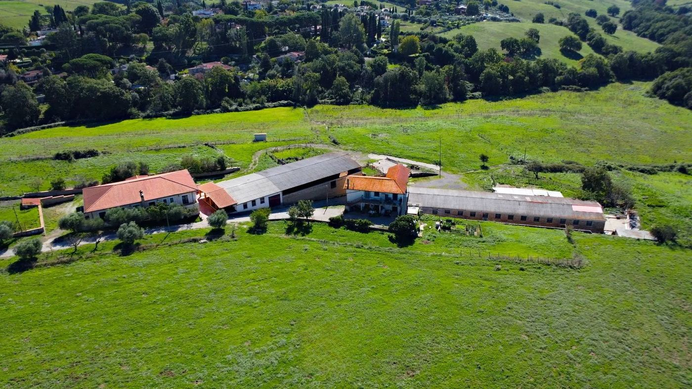
| Fabbricato | Catasto | Descrizione | Mq |
|---|---|---|---|
| Agriturismo | — | 8 camere, sala ristorante ~70 coperti con camino, sala colazioni, veranda | — |
| Abitazione | F. 5 p. 225/500 · A/4 cl. 2 | unità abitativa | 77 |
| Abitazione | F. 5 p. 225/501 · A/4 cl. 2 | unità abitativa | 90 |
| Abitazione | F. 5 p. 225/1 · A/4 cl. 1 | unità abitativa | 85 |
| Abitazione | F. 5 p. 225/2 · A/4 cl. 1 | unità abitativa | 76 |
| Stalla | D/10 | grande volume a una campata | 750 |
| Fienile | D/10 | muratura in tufo, struttura alta e aperta | 400 |
| Magazzino | D/10 | deposito e servizi | 200 |
Fabbricati strumentali agricoli (D/10): F. 5 p. 225/4, 226/1, 299, 324, 325, 326, 327. Le superfici di stalla, fienile e magazzino sono quelle indicate nella stima di mercato; le superfici delle abitazioni sono catastali; la superficie dell'agriturismo risulta dalle planimetrie. Planimetrie disponibili su richiesta.
05 · Agriturismo e società agricola
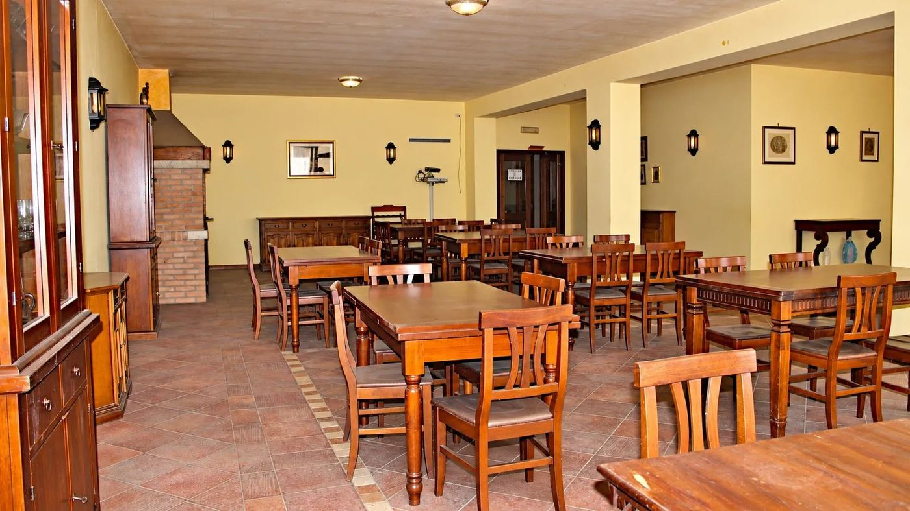
Sala ristorante con camino, circa 70 coperti.
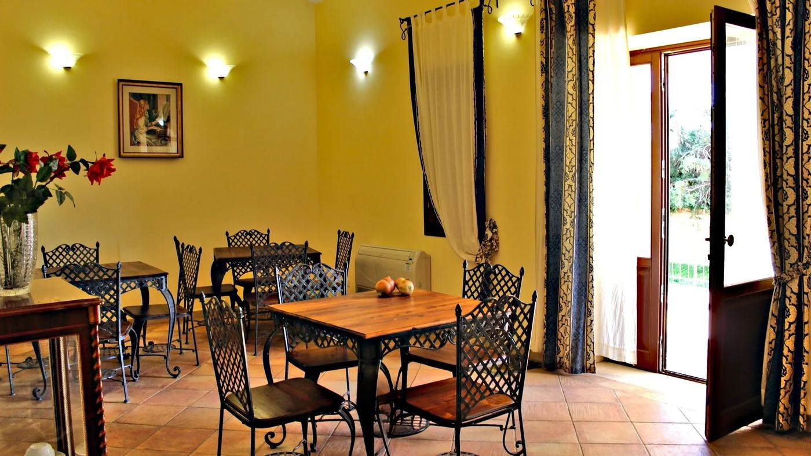
Sala colazioni con accesso al giardino.
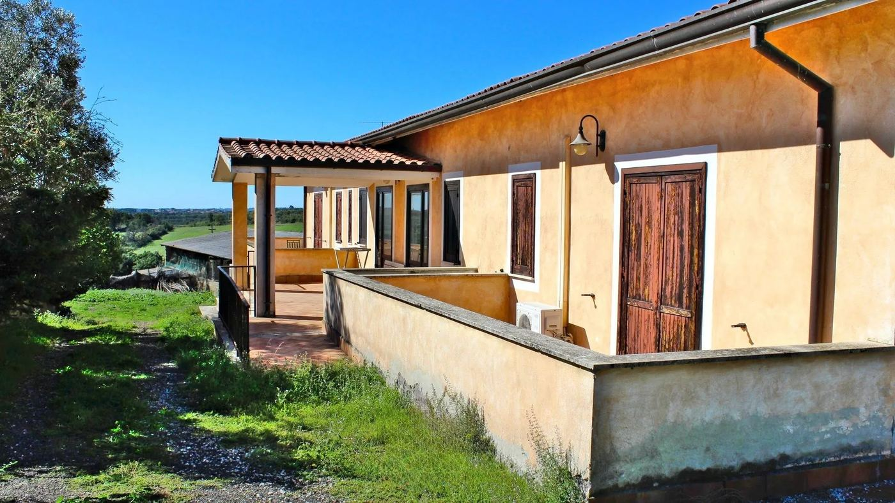
Porticato e terrazza in cotto.
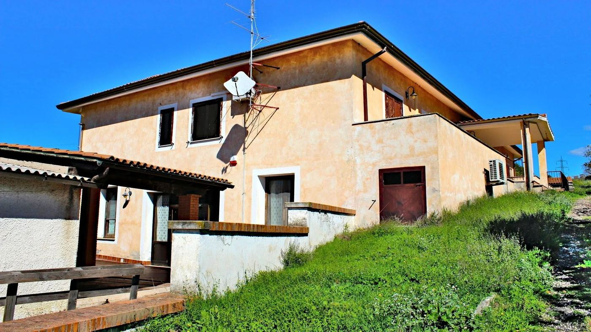
Il corpo dell'agriturismo.
06 · La tenuta oggi
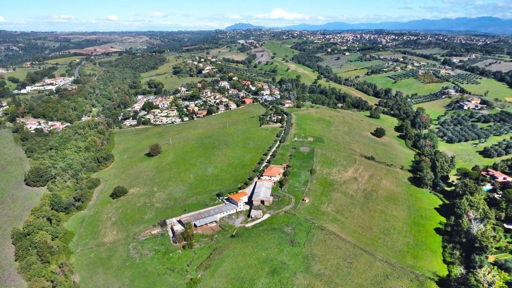
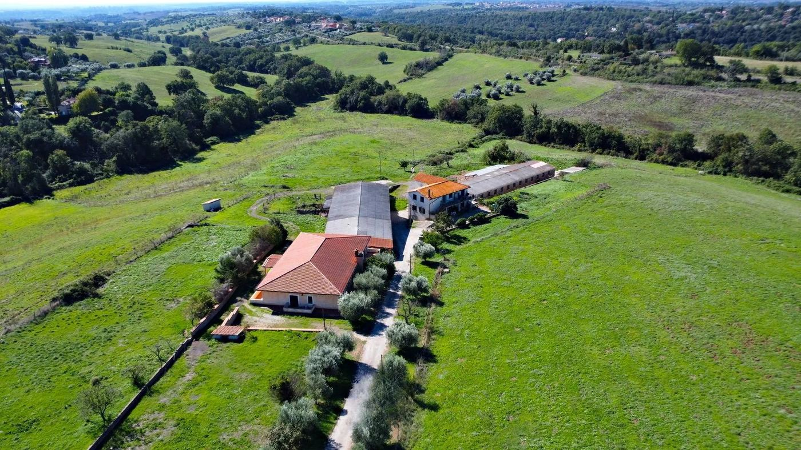
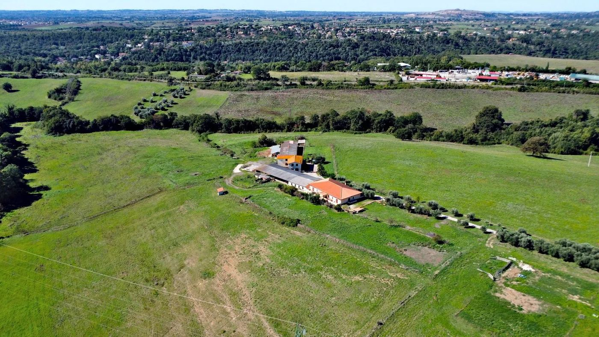
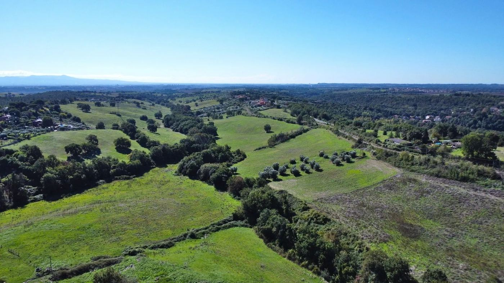
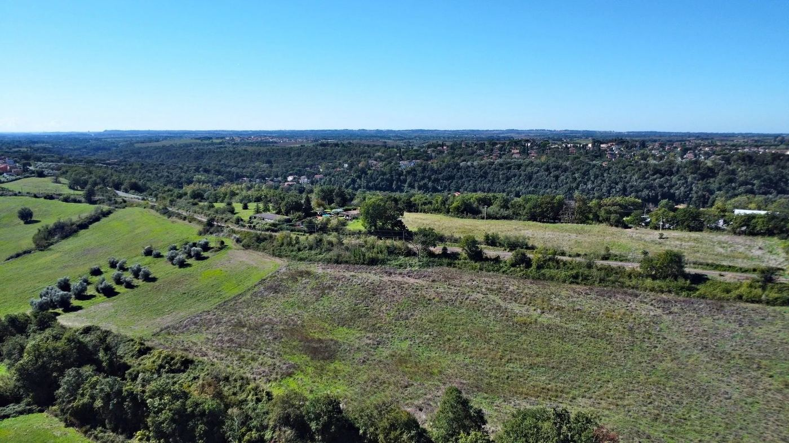
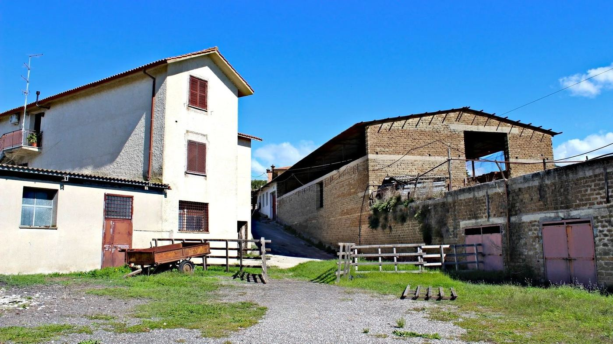
07 · Il potenziale
Camere rinnovate, cucina con i prodotti dell'azienda, olio della tenuta, esperienze in campagna per ospiti da Roma e dall'estero.
Sala esistente, veranda e prati panoramici. Il fienile in tufo, una volta recuperato, può diventare sala ricevimenti coperta.
Stalla da 750 mq come scuderia con box, 19,5 ettari per paddock e fieno, pensione, scuola e turismo equestre.
Yoga, ritiri, turismo lento: a 50 km da Fiumicino, per gruppi italiani e internazionali.
Ventuno ettari a 25 km da Roma possono essere affittati a un coltivatore diretto con contratti pluriennali, mantenendo aperte tutte le opzioni future.
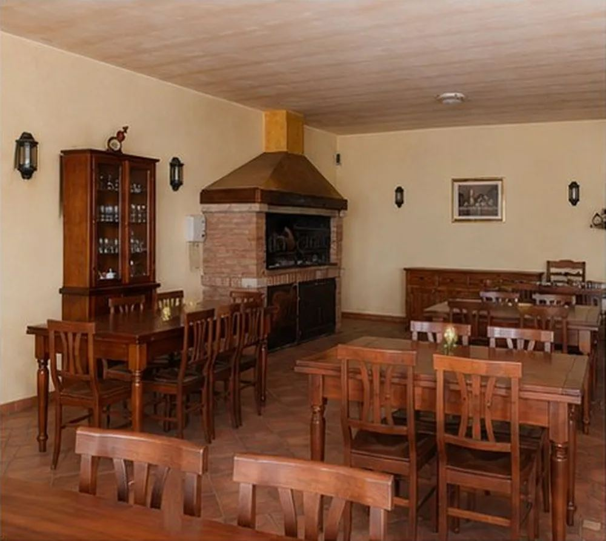
Sala con camino, oggi.
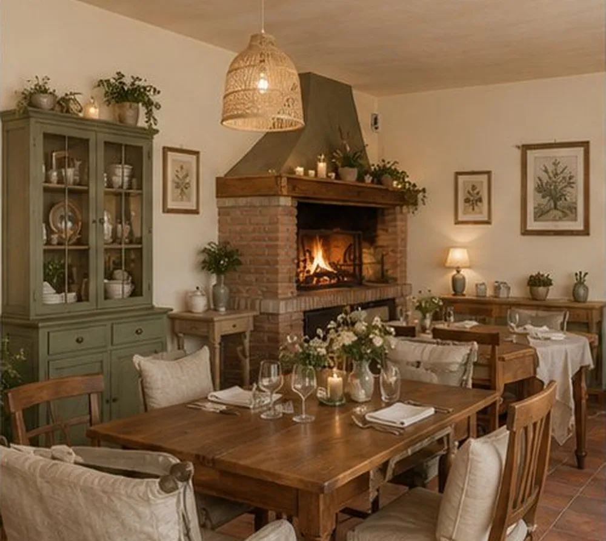
Ipotesi di restyling (simulazione).
| Stile di restyling | Interventi | Investimento indicativo | Tempi |
|---|---|---|---|
| Rustico contemporaneo | tessuti, luci, complementi | € 5–10 mila / camera | 2–4 settimane |
| Mediterraneo minimal | palette chiara, fibre naturali | € 8–15 mila / camera | 3–5 settimane |
| Boutique country chic | tessuti pregiati, arredi scelti | € 12–22 mila / camera | 4–6 settimane |
08 · Stato e informazioni tecniche
I tetti di stalla e fienile sono in cemento-amianto e vanno rimossi e smaltiti da ditta autorizzata, con piano di lavoro presentato all'ASL. Dopo la bonifica i volumi, già accatastati come fabbricati agricoli, tornano utilizzabili. Bandi come Parco Agrisolare (fotovoltaico con rimozione amianto) e ISI INAIL hanno finanziato in passato interventi di questo tipo.
Tre fosse Imhoff: una per le abitazioni, una per l'agriturismo, una per i servizi agricoli.
Per seminare e gestire i terreni con le agevolazioni previste, la società agricola deve essere attiva. L'agriturismo resta collegato all'attività agricola, che deve essere prevalente.
Prima del rogito la proposta va notificata agli eventuali aventi diritto (affittuari o confinanti coltivatori diretti), che hanno 30 giorni per esercitarla.
Coltivatori diretti e IAP possono accedere alle imposte ridotte della piccola proprietà contadina sulla parte agricola (registro e ipotecaria fisse, catastale 1%).
Visure e planimetrie catastali, certificato di destinazione urbanistica, documentazione urbanistica dei fabbricati, autorizzazioni della società agricola, stima di mercato completa.
09 · Prossimi passi
Sopralluogo guidato della proprietà, anche nel fine settimana.
Due diligence: accesso ai documenti tecnici, catastali, urbanistici e societari.
Proposta d'acquisto scritta, con modalità di acquisto della società agricola.
Contratto preliminare e notifica della prelazione agraria.
Rogito presso il notaio scelto dalle parti.
fgstrategystudio@gmail.com
+39 351 704 8540 · WhatsApp
www.tenutacolledellerose.it
Questo dossier è riservato e destinato esclusivamente al destinatario, ai soli fini della valutazione dell'acquisto. Non può essere copiato né trasmesso a terzi senza consenso. Le informazioni sono fornite in buona fede sulla base dei documenti disponibili e non costituiscono offerta contrattuale; superfici, dati catastali e stime vanno verificati in fase di due diligence. Le immagini "dopo" sono simulazioni illustrative.